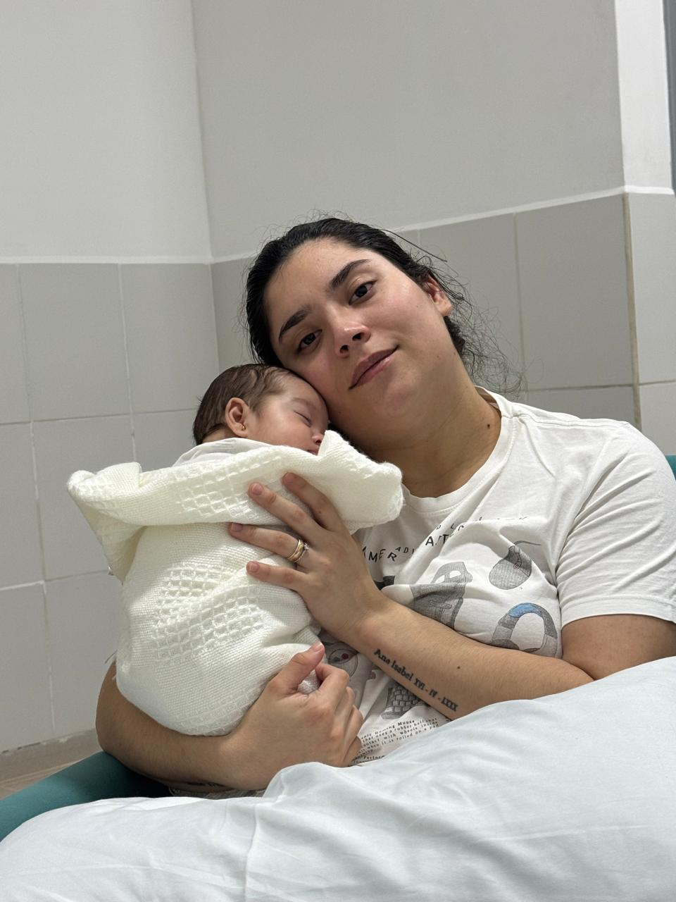
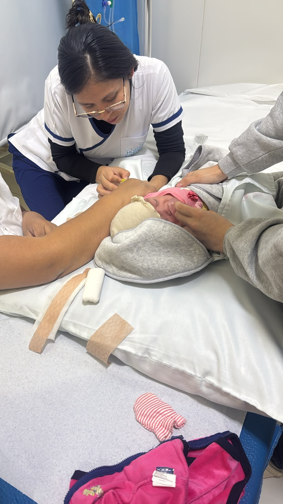
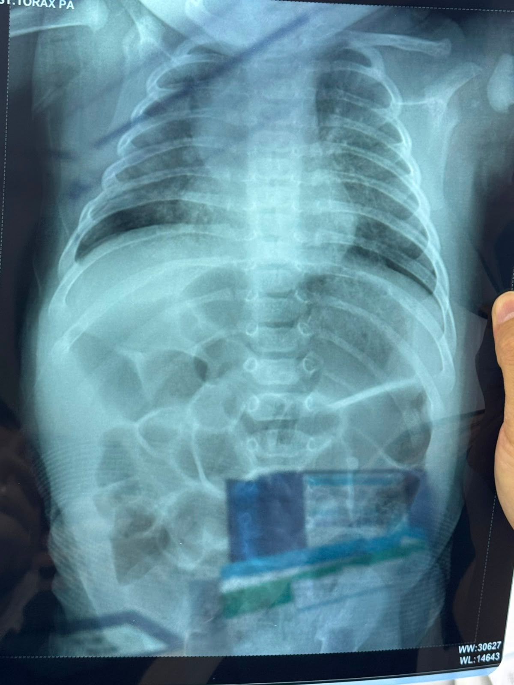

En qué se gastó
Distribución por categoría · toca para filtrar
A los pocos meses de nacer, Analu enfrentó su primera enfermedad. Aquí registramos su historia, su atención y sus gastos — día a día.
Pensábamos que despertaría como siempre. Esa mañana Analu amaneció distinta: apagadita, con mucho sueño y sin ganas de su leche.
El 3 de julio de 2026, Ana Lucía (bebé prematura) despertó enfermita: decaída, con mucho sueño, sin ganas de tomar su leche, y con tos y flema al respirar.
Esa misma noche la llevaron al Hospital Católico, donde quedó internada para estudios y tratamiento: laboratorios, panel viral respiratorio, radiografía de tórax, antibióticos y sueros. Su lucha, una vez más, apenas empezaba.
Momentos de su primera batalla — para no olvidar lo valiente que fue. Toca una foto para verla en grande.


Todos los importes en bolivianos (Bs.). Datos en vivo desde la hoja de control.
Distribución por categoría · toca para filtrar
Total de cada boleta o factura
Gasto según la fecha

Aún no se agregó la imagen.Como parte de los estudios, se le realizó una radiografía de tórax para evaluar su respiración, la tos y la flema.
La guardamos aquí como parte de su historia. Toca la imagen para verla en grande.
Cada ítem de cada comprobante
| Comprobante | Fecha | Categoría | Descripción | Cant. | Importe |
|---|---|---|---|---|---|
| Total mostrado | — | ||||